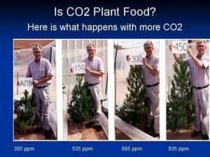

< < < Back
Is Global Warming A Lie To Help Usher In An Oppressive World Government? – Return Of Kings
Ten years ago, Al Gore claimed we had 10 years to save the planet from global warming, as pointed out in this Communist BS (CBS News) report from early 2006.
Unless drastic measures to reduce greenhouse gases are taken within the next 10 years, the world will reach a point of no return, Gore said.
He sees the situation as “a true planetary emergency.”
“If you accept the truth of that, then nothing else really matters that much,” Gore said in an interview with The Associated Press. “We have to organize quickly to come up with a coherent and really strong response, and that’s what I’m devoting myself to.”
The clock ran out late this January, and warming has not reached what Gore called planetary emergency levels. Civilization, and the world, are still here. In spite of all the self-congratulatory agreements and conferences that have been held around the world on this matter, nothing substantive has been done to “fight global warming.”
After all the rhetoric about a planet that was overheating, a number of scientists now think we could be headed into another Little Ice Age, and the global average temperature has remained steady for a decade and a half or more, defying the predictions made 20 years ago for today.
But, a lot has been done to ramp up the hysteria over normal (if devastating) weather events like tornadoes, hurricanes, floods, and fires. Now virtually every bad weather event comes tagged by the mainstream media with the suggestion that humans are to blame, even though tornadoes are down to record low numbers nationwide for 3 years in a row, and the U.S. hasn’t been hit by a major (Category 3 or higher) hurricane since Wilma in 2005, the longest stretch since the Civil War. Another of the warmists’ infamous predictions, that the Arctic would be ice-free in 2013, also came and went, and the ice cap is still stubbornly there.
If you tune in to the mainstream media you will come away with quite a different impression, however, since weather events are now hyped to the extreme because they drive ratings. Take it from me, a former apparatchik of the mainstream media who defected—causing hysteria about the weather drives ratings. Despite the hype, an increasing number of people are refusing to buy into the social hysteria surrounding global warming, which is really a thinly veiled attempt at instituting a global carbon tax.
Rebranding of global warming
Al Gore is probably hoping everyone forgot about yet another failed Doomsday prediction of his
Since so many of the predictions have failed, and the Earth is stubbornly refusing to go along with the global warming polemic, you might have noticed that since the global warming carbon tax scheme began in the 1980s, it has recently been rebranded. It’s now called climate change.
But wait just a minute. The climate has always been changing on earth, and it has had nothing to do with mankind. There were periods when the earth was almost completely frozen over, and other periods when tropical forests extended northward towards the poles. All of those changes occurred either before man even evolved or the invention of the “infernal” combustion engine.
Climate change is an all-encompassing term that means whether its dry or wet, hot or cold, cloudy or sunny, and snowy or rainy, the changes can then be blamed on mankind. This makes the end goal of control easier to achieve than when the farce was named global warming on a planet that refuses to heat up as much as predictions in the 1980s and 1990s for today called for.
Consensus is not science, it’s politics
The “consensus” of climate scientists who supposedly agree that CO2 is overheating the planet is often claimed to be 97%. The global warming alarm is also claimed to have the stamp of approval of the IPCC, the Intergovernmental Panel on Climate Change (the mainstream media does worship “officials” instead of logic and reason, after all). But like any governmental body, its conclusions are politically driven, and not scientifically driven.
Richard Lindzen, former Alfred P. Sloan Professor of Meteorology at MIT and an atmospheric physicist, tells us the ugly truth behind this so-called consensus.
This claim that the IPCC is the world’s top 1,500 or 2,500 scientists – you look at the bibliographies of the people and it’s simply not true. There are quite a number of non-scientists. To fill the number up to 2,500 they have to start taking reviewers, and government people, and so on; anyone who ever came close to them. And none of them are asked to agree. Many of them disagree. People have decided you have to convince other people, that since no scientist disagrees, you shouldn’t disagree either. But whenever you hear that in science, that’s pure propaganda.
We will hear more from Lindzen in a moment. Professor Paul Reiter of the Pasteur Institute in Paris and a former IPCC member, has also spoken out on the “consensus.”
A galling aspect of the debate is that this spurious ‘science’ is endorsed in the public forum by influential panels of ‘experts.’ I refer particularly to the Intergovernmental Panel on Climate Change. Every five years, this UN-based organization publishes a ‘consensus of the world’s top scientists’ on all aspects of climate change. Quite apart from the dubious process by which these scientists are selected, such consensus is the stuff of politics, not of science. Science proceeds by observation, hypothesis and experiment. The complexity of this process, and the uncertainties involved, are a major obstacle to a meaningful understanding of scientific issues by non-scientists. In reality, a genuine concern for mankind and the environment demands the inquiry, accuracy and skepticism that are intrinsic to authentic science. A public that is unaware of this is vulnerable to abuse.
The history of doing science by political consensus is indeed a disastrous one. Galileo was famously imprisoned until his death for challenging the establishment of his day, the Catholic Church, and teaching that the earth revolved around the sun.
More recently, Ignaz Semmelweis was thrown into an insane asylum in 1865 and then beaten to death by the guards at age 47 less than 2 weeks after being committed for suggesting doctors should wash their hands between doing autopsies and examining their patients. As a result of his “insanity” the mortality rate at clinics that adopted handwashing dropped 90% but his views conflicted with the establishment of the time. Only after his death did Louis Pasteur confirm the germ theory and vindicate Semmelweis.
Here, we have two quick examples of how dangerous establishments and political contamination of science can be. History has many others.
CO2 is not a pollutant
Human-produced CO2 is claimed to be the evil behind global warming, but as we learn in elementary school science, it’s an essential gas for all life on earth. It is also one of the weakest of the greenhouse gases. It makes up a minuscule 0.04% of the atmosphere, meaning the current atmosphere is CO2-starved if one looks at the history of the planet over the last 500 million years since the Cambrian Explosion of life burst forth onto the planet. Richard Lindzen once again explains.
CO2 for different people has different attractions. After all, what is it? – it’s not a pollutant, it’s a product of every living creature’s breathing, it’s the product of all plant respiration, it is essential for plant life and photosynthesis, it’s a product of all industrial burning, it’s a product of driving – I mean, if you ever wanted a leverage point to control everything from exhalation to driving, this would be a dream. So it has a kind of fundamental attractiveness to bureaucratic mentality.

Yes, CO2 is plant food, needed for photosynthesis
CO2 concentrations have almost always been higher than today throughout the last half a billion years, usually 5 to 25 times higher if the levels are graphed out. Plants grow better in atmospheres with higher CO2 concentrations. Quite simply, CO2 is plant food.
Geologically speaking, CO2 concentrations have almost always been higher than the carbon-starved atmosphere of today, often 5 to 25 times higher
The planet has had even ice ages when the CO2 was much higher than today. In fact, there was an Ice Age in the end of the Ordovician when the CO2 concentration was an incredible 10-15 times higher than today. Crucially, even when there is an apparent relation between temperature and climate as in the Vostok ice core record, the relationship is the other way around from what Al Gore claims it to be. Temperature leads CO2, not the other way around. The ice core record goes back only 600,000 years, or 0.0013% of the Earth’s long history.
If one looks at temperature over the entire history of the earth (4.5 billion years) and not just the last blink of an eye in geological time (10,000 to 600,000 years ago) one does not see a causal relation between CO2 and temperature.
You may also be interested to know that in one of the last periods of low CO2 concentrations (below 300 parts per million) known as the Carboniferous, as the CO2 content tumbled, the oxygen content of the atmosphere soared to 35% and meganeura—giant insects like dragonflies that were the size of hawks and giant spiders that were the size of house plants—roamed the earth. This was due the increased oxygen available.
Giant insects evolved as CO2 concentration plummeted in the Carboniferous
As you can see from these quick examples, the relationship between atmospheric gases and biology is much more complex than just “CO2 is bad.” Further, increased CO2 will most likely lead to a greener world, since it is plant fertilizer.
The real goal: establishing a one-world government?
It is becoming clearer with each passing year the real goal of causing hysteria over the climate is to enable a global body to tax the entire world. A body that has the ability to tax the entire world is a de-facto world government.
Lord Christopher Monckton, former science advisor to British Prime Minister Margaret Thatcher, has been tirelessly sounding the alarm about this existential threat to freedom. He has also challenged global warming poster boy Al Gore to debate him on the science surrounding global warming, but Gore has repeatedly refused. Monckton has been criticized for being a non-climate scientist, but it is interesting that Al Gore’s non-existent credentials have never been challenged by the media. He is a mathematician, however, and is quite skilled at deconstructing the skewed statistics presented by the global warming fear-mongers.
Lord Christopher Monckton, repeatedly banned for raising inconvenient questions, skydives into the Durban climate conference unwelcomed
Monckton often speaks about global warming and global government but a biased media ignore him, even when they are invited to cover his events. He is very good at connecting the politics and the pseudoscience. He says global warming is being used as a fig leaf to cover the real intentions of the yearly global warming meetings of governments around the world. He attended the annual global warming meetings until he was banned for asking a valid question about why the statistics were being cherry-picked. Monckton responded by “dropping in” unwelcomed on the Durban climate conference by skydiving in from 10,000 feet when they didn’t want to let him in.
As Monckton explains in this video, the true goals at the annual climate meetings include levying heavy global taxes that will bankrupt the financial industry, redistributing wealth from Western nations to developing countries for their so-called “climate debt,” and eventually shutting down capitalism around the world. The proposal would also give rights of legal personality to Mother Earth, enabling her to sue Western nations for their so-called “climate debt” to the third world. The aims would cripple economies and force people to figuratively go live in yurts.
The entire farrago is based on a predicted doubling of CO2 concentration by 2100 to eight one-hundreths (0.08%) of the total volume of the atmosphere, nothing significant if one looks at the history of the planet. It is also based on computer modeling which has been proven wrong time and time again because the earth is not heating up as much as predicted. It’s easy to make the connection that this has very little to do with saving the planet and everything to do with instituting a global government.
Real environmental problems
One of the proposed solutions to global warming has been clean energy. This is a great idea, and I’m definitely not opposed to finding better methods of producing energy.
One of the biggest pushes has been behind creating wind farms, which not only already chop hundreds of thousands of birds (some endangered) out of the sky each year, but also require huge quantities of fossil fuels to produce and maintain. One conservative estimate says it would require 5 million wind turbines to power the world, and of course the number of birds killed would rise well above the 300,000 that are killed now if there were that many blades churning in the sky. The utter hypocrisy of environmentalists who support wind farms as a clean energy solution only proves how much cognitive dissonance they have between reality and their pet projects.
As long as a wind farm chops endangered species out of the sky, it’s okay
The entire global warming obsession takes time, money, and resources away from other, real environmental problems.
One that is never discussed because it’s politically incorrect to do so is an economic system that encourages women to consume as many material and consumer items as they can. Economists and marketers refer to this as the she-conomy, since women make up or influence 80% or more of consumer spending. By continuing to feed the lust for material items, the economy now runs as a gigantic waste machine of consumerism, with all this waste ending up in landfills and in our oceans. It also wastes enormous amounts of fossil fuel energy producing and transporting these items around.
The statistics of pleasing the female id are not pretty. According to Becoming Minimalist (all of these claims are cited by the way:)
- The average American home now has an incredible 300,000 items in it.
- The average American home size has tripled in the last 50 years even though family size has been nearly cut in half.
- One out of every 10 homes now rent offsite storage to put junk in. A quarter of homes with two car garages don’t have room to park vehicles in them.
- The average American woman now owns 30 outfits, up from 9 a few decades ago.
- The average American now throws away 65 pounds of clothing a year.
- Women spend more on jewelry and watches than higher education.
- Women spend a full eight years of their lives shopping.
- Americans spend $1.2 trillion annually on non-essential goods—things they do not need, in other words. Again, 80% of this spending is driven by women.
After seeing these statistics, perhaps a better environmental solution is promoting a minimalistic lifestyle that isn’t driven by materialism and consumerism, one that moves away from a she-conomy. Just look at the abominable amount of waste it is creating.
If the world moved away from a female-driven consumer economy to something—to use one of the environmentalists’ favorite terms—a little more sustainable, wouldn’t we all be better off? It certainly makes more sense than waging a war on a trace gas that is essential for all life on earth, one of the weakest greenhouse gases that stands at one of the lowest levels it has ever been over the last 500 million years.
Read More: 3 Things That Worry Leftists More Than Global Jihad